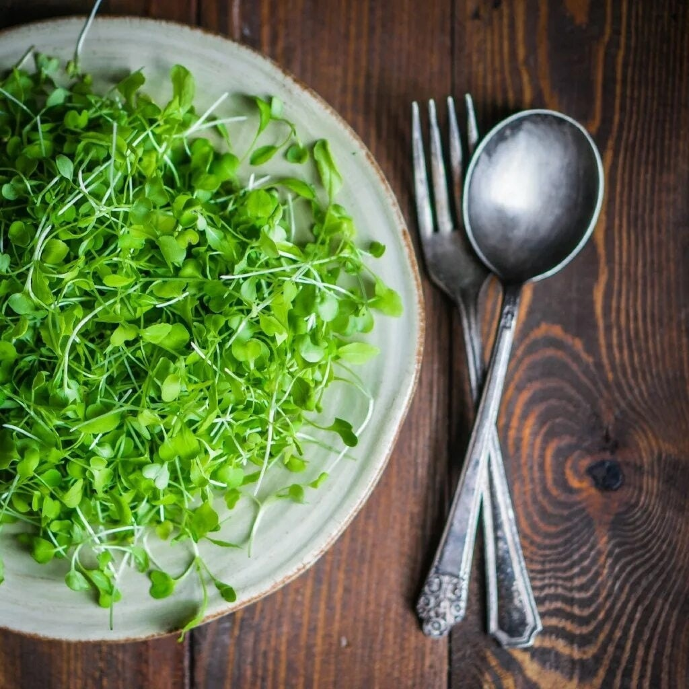

Брокколи
Ростки этой капусты выводят из организма тяжёлые металлы, токсины и шлаки, улучшают обмен веществ.
Повышают иммунитет и укрепляют нервную систему.
Помогают похудению, способствуют профилактике онкологии.
Укрепляют кости, поддерживают эластичность сосудов.
Замедляют процессы старения, снижают уровень холестерина.
Эффективны при язве желудка.
Горох
Регулярное употребление микрозелени помогает поддерживать иммунитет и предупреждать авитаминоз.
Ростки гороха обладают антиоксидантными свойствами, способствуют выведению токсинов, улучшают пищеварение.
Благотворно воздействуют на кровеносную систему: нормализуют давление, укрепляют сосуды, понижают уровень сахара в крови.
Горчица
Способствуют очищению организма от вирусов и бактерий в период сезонных заболеваний.
Применение микрозелени горчицы будет весьма полезен при сахарном диабете.
Улучшает сердечно-сосудистую деятельность и иммунную систему человека.
Улучшает аппетит. Способствует омоложению организма.
Кориандр
Оказывает выраженные детокс-эффект.
Выводит не только токсины, но и соли тяжелых металлов из организма.
Кроме того, имеет антисептическое и обеззараживающее действие.
Нормализует артериальное давление, уровень холестерина и сахара в крови.
Имеет успокаивающие свойства для нервной системы. Повышает качество сна, а также улучшает аппетит.
Стимулирует мужскую потению и улучшает работу репродуктивной системы.

Кресс-салат
При регулярном употреблении, микрозелень кресс-салата улучшает пищеварение и состав крови, справляется с кашлем и повышенным кровяным давлением.
Проросшие семена кресс-салата также оказывают антимикробное действие, благодаря чему используются народной медициной в различных заживляющих мазях.
Подсолнух
Укрепление иммунной системы. Витамин С улучшает иммунитет и стимулирует выработку коллагена.
Польза для беременных.
В микрозелени подсолнечника содержится достаточное количество фолиевой кислоты, которая необходима для правильного развития нервной системы ребенка.

Рукола
Улучшает здоровье костей. Укрепление иммунной системы.Профилактика раковых заболеваний
Улучшение метаболизма. Улучшение зрения. Снижение веса. может улучшить состояние здоровья людей, страдающих остеопорозом, так как витамин К способствует усвоению кальция в организме, благодаря чему повышает здоровье и прочность костей.
Микрозелень рукколы имеет приятный пикантный вкус, который будет хорошо гармонировать с любыми блюдами.
Свёкла
Нормализация усвоения и обмена веществ, которая обеспечивает бодрость и хорошее настроение на целый день.
Укрепление нервной системы;
Нормализация функционирования сердечно-сосудистой системы;
Укрепление ногтей зубов и волос;
Улучшение зрения.
Самое большое преимущество от микрозелени свеклы для организма – это нормализация пищеварительной системы.
Редис
Улучшение здоровья сердечно-сосудистой системы.
Профилактика возникновения раковых заболеваний. Контроль веса. Здоровье кожи.
Профилактика болезни Альцгеймера.
Профилактика диабета.
Здоровье иммунной системы.
Витамины А, С, К, В6.
Высокое содержание витамина А поддерживает здоровье иммунной системы и органов зрения.
Микрозелень редиса в 40 раз питательнее взрослого растения. Если вы любите обычный редис, то скорее всего, микрозелень редиса тоже не оставит вас равнодушным!
Люцерна
Понижает холестерин и сахар в крови, выводит токсины из организма.
Повышает общий тонус организма.
У кормящих женщин способствует лактации и является профилактикой опухолей молочной железы.
Помогает при простуде, оздоравливает кровеносные сосуды и артерии, полезна при анемии, диабете, аллергии, циститах и простатите, артрите и ревматизме, заболеваниях печени и желчного, почек и мочевого пузыря.
Налаживает работу ЖКТ. Улучшают состояние кожи, волос и ногтей, снимают мышечное напряжение и судороги.